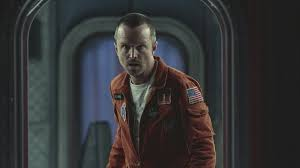
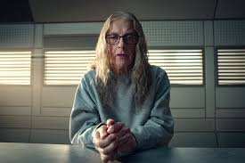

_2.gif)


Una serie antológica que explora las consecuencias inesperadas de la tecnología en nuestras vidas. Bienvenido a un futuro donde el espejo está negro.
Sobre la Serie
Black Mirror es una serie antológica británica creada por Charlie Brooker que cuestiona nuestra relación con la tecnología. Cada episodio presenta una historia independiente ambientada en un futuro cercano, donde los avances tecnológicos transforman la sociedad de maneras perturbadoras e impredecibles.
Desde su estreno en 2011, la serie se ha convertido en un fenómeno cultural global, ofreciendo reflexiones profundas sobre la inteligencia artificial, las redes sociales, la vigilancia masiva y la realidad virtual.